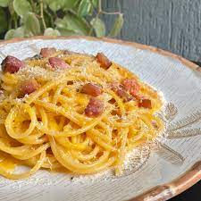

Carbonara

Ingredientes:
- 500g de Spaghetti.
- Bacon defumado.
- 3 Ovos.
- Sal a gosto.
- Pimenta do reino à gosto
- queijo ralado a gosto
Modo de preparo:
- Frite bem o bacon, até ficar crocante (pode-se adicionar salame picado).
- Coloque o macarrão para cozinhar em água e sal.
- No refratário onde será servido o macarrão, bata bem os ovos com um garfo.
- Tempere com sal e pimenta a gosto, e junte o queijo ralado, também a gosto.
- Quando o macarrão estiver pronto, escorra e coloque (bem quente) sobre a mistura de ovos, misture bem.
- O calor da massa cozinha os ovos.
- Coloque o bacon, ainda quente, sobre o macarrão e sirva.